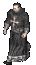
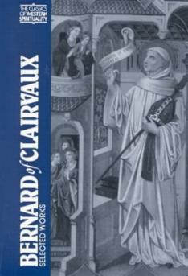
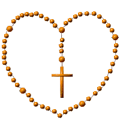
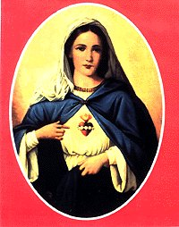
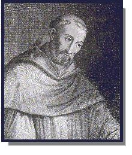
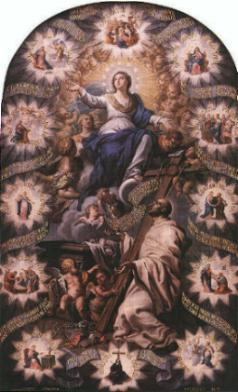
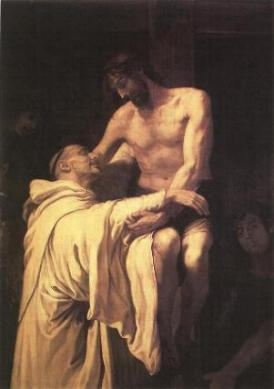

 
No primeiro milagre, sobressai nitidamente a tendência que seguiu durante toda a sua vida, qual seja, de defensor da Igreja e dos pobres.
Um seu parente, Josbert, Visconde de Dijon, que residia nas proximidades de La Ferté, foi acometido de um ataque de paralisia, que o privou do uso da palavra. A morte parecia iminente e sua família, gente devota, temia pela salvação de sua alma, porque sem falar, não podia confessar. Josbert embora cristão, distinguira-se entre os nobres pelas suas intrusões na Igreja e pela arrogância contra os pobres.
Um mensageiro foi às pressas chamar Bernardo em Claraval. Assim que chegou, foi solicitado pelos familiares, no sentido de que fizesse tudo para recuperar a saúde dele. Respondeu-lhes:
- "Este homem ofendeu com frequência e dolorosamente a DEUS com suas perseguições à Igreja e aos pobres. Se prometerem uma reparação a todos aqueles que ele lesou por alguma forma, asseguro-lhes em nome do SENHOR, que lhe será concedida uma oportunidade de confessar-se".
A coragem e a segurança de Bernardo deixou todos surpresos. Como poderia ele garantir alguma coisa, se é DEUS quem faz tudo? O filho de Josbert, deu todas as garantias necessárias, em face da incisiva afirmação.
Os companheiros do Abade Santo ficaram abismados. Aos seus murmúrios de censura, ele respondeu:
- "Tende fé, DEUS pode efetuar facilmente aquilo que vos afigura tão difícil de acreditar".

Depois de ministrar os últimos Sacramentos ao enfermo, fez-lhe umas breves exortações e voltou para Claraval. Josbert sobreviveu ainda por três dias, o tempo necessário para arrumar os seus negócios, reparar em parte os seus crimes e distribuir esmolas aos pobres, e depois, morrer em paz.
Mais ou menos na mesma época, na presença de Guido e Godofredo de La Roche, sarou uma ferida ulcerosa na perna de um rapaz, apenas fazendo o sinal da Cruz sobre ela.
E como estes, muitos outros sinais ocorreram. O SENHOR permitia os acontecimentos sobrenaturais, através da mediação de seu servo bondoso e fiel.

ESCRITOR E ORADOR FAMOSO
" Também nesta época se dedicou a 
Em 1121, publicou as homilias sobre as Glórias da VIRGEM MÃE DE DEUS. Foi uma iniciativa que lhe causou emoção e júbilo, porque era um assunto que tinha especial veneração: escrever sobre NOSSA SENHORA e poder manifestar publicamente o seu imenso e dedicado amor à MÃE DE DEUS, satisfazendo uma vontade interior que o acompanhava desde criança.
Foi ainda a partir do ano de 1122, que procurou
cercar as Instituições Religiosas e as Ordens Monásticas de um modo geral, de
seu maior zelo e cuidadosa atenção. Aquelas que apresentavam frouxidão no
cumprimento da Regra, outras 
Com este procedimento ele conseguiu despertar muitas consciências que repousavam placidamente, alertando-as para os seus deveres de monges e lembrando aos seus corações, que é justamente através do silêncio, do sacrificio pessoal e isolamento do mundo, que seriam conduzidos verdadeiramente à presença de DEUS.

GRAVE ENFERMIDADE
- No ano 1125 estava novamente com uma grave enfermidade que quase o matou. Foi
nesta época que teve as três famosas visões, a terceira das quais, resultou
na sua cura milagrosa. Conta-nos 
"O Santo Abade estava tão fraco e exausto que pareceu-nos prestes a expirar. Os seus discípulos e amigos reuniram-se à sua volta, como crianças junto ao leito de morte do pai amado. Eu encontrava-me igualmente presente, pois, por sua extrema deferência, contava-me no número de seus amigos. Já pronto a exalar o último suspiro, dir-se-ia num êxtase espiritual, ele estava presente no tribunal de DEUS. Quem o enfrentava era Satanás, que apresentava uma série de acusações, disposto a assegurar a sua condenação. Quando o acusador terminou e o homem de DEUS deveria replicar, meio perplexo e surpreso apenas pode dizer": Confesso-me indigno do Céu e incapaz de obtê-lo por meu próprio mérito. Todavia, JESUS meu Salvador, possui este poder por dois direitos distintos: o de Único Gerado pelo PAI ETERNO e o de sua Paixão, Morte e Gloriosa Ressurreição. Satisfeito com o primeiro, ELE concedeu-me o segundo e é com o direito dos méritos doados por ELE, que reclamo à recompensa do Paraíso.
"Esta resposta confundiu de tal modo o demônio, que desesperado abandonou o tribunal, enquanto o homem de DEUS voltava a si".
Seguiu-se a segunda visão.
Ele parecia encontrar-se
em determinada costa marítima aguardando uma embarcação que o transportasse.
Finalmente o barco acercou-se e ele se apressou em entrar. No entanto, não
o conseguiu e após mais duas tentativas, o barco afastou-se para não tornar a
ser visto.
Disto concluiu que o momento da sua partida deste mundo ainda não chegara.
Contudo seu estado de saúde agravou-se e experimentava tantas dores que encontrava conforto, na esperança de um rápido desenlace.

"Sentindo-se violentamente atormentado para além da tolerância, chamou um dos assistentes e lhe implorou que buscasse algum alívio para o seu sofrimento, por meio de uma prece. O bondoso irmão, que sabia como subordinar a modéstia à obediência, dirigiu-se à Igreja e orou perante cada um dos três altares, dedicados a NOSSA SENHORA, São Bento e São Lourenço. No mesmo instante, a Gloriosa MÃE DE DEUS, acompanhada dos dois Santos, todos com olhares plenos de doçura e bondade, apareceram à cabeceira de Bernardo. A aparição foi tão clara e distinta, que ele reconheceu imediatamente os três visitantes. Os Santos colocaram a mão no local onde a dor tinha a sua origem e a fizeram desaparecer instantaneamente. Todos os sintomas da doença o abandonaram no mesmo momento."